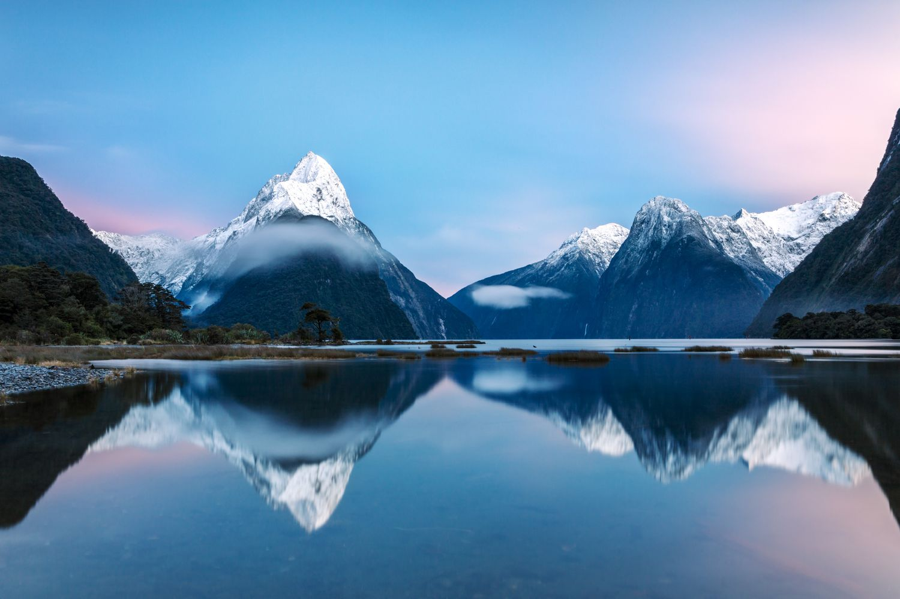
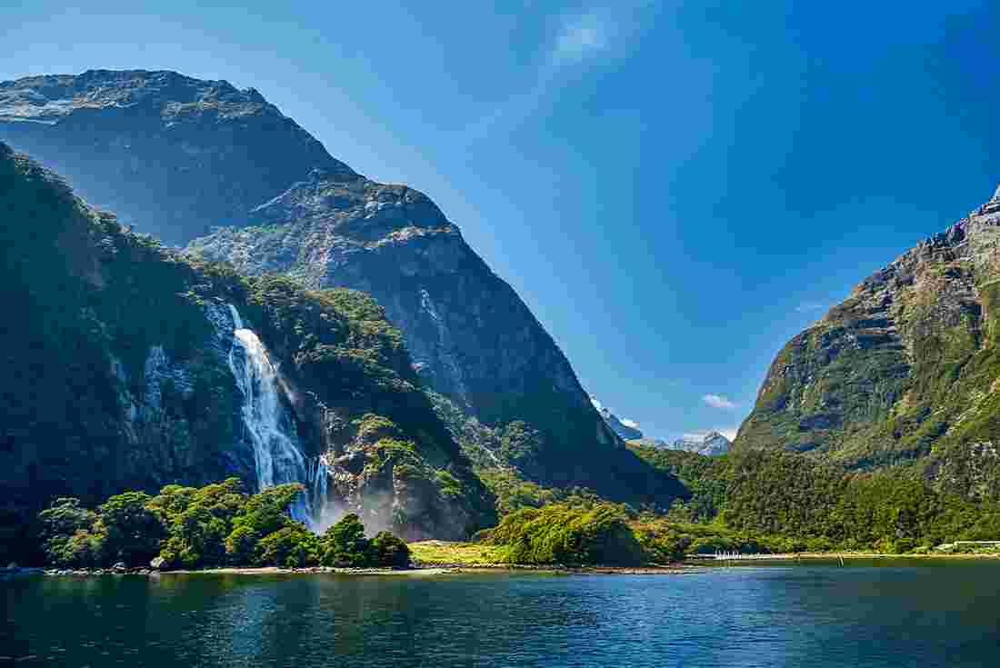
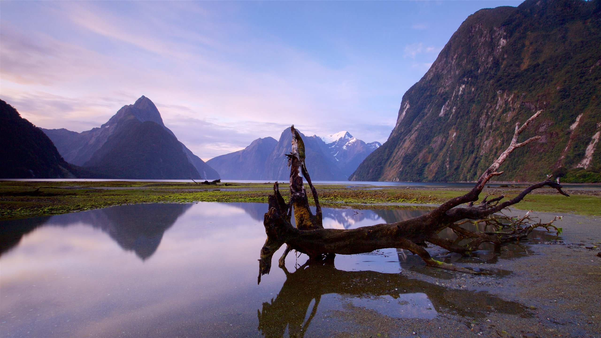

Fiordland National Park in New Zealand is known for its dramatic landscapes, including fjords, mountains, and lakes. Milford Sound and Doubtful Sound are two of the most famous fjords, offering stunning natural beauty and wildlife.